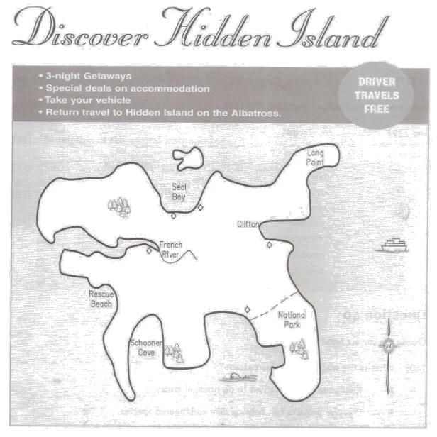

Read the brochure on Hidden Island and answer Questions 1-5.

Read the passage below and answer Questions 6-13.
Travel Insurance.
Don’t let anything spoil your fun! Your vacation is all about exploring, adventure and fun. You want to see new places and try new things.
The Youth Adventure Package is an affordable ‘just in case’ backup plan, so you aren’t hit with unexpected medical costs while on the adventure of a lifetime. You’ll be long way from home. If you have an unexpected illness or accidental injury, we’ll be there to help and ensure you get the care you need.
Our emergency travel assistance services are available from anywhere in the world at anytime of the day or night.
Even for young healthy travellers, sickness or accidental injury can happen at any time. Charges for hospital stays can be thousands of dollars per day not including doctors’ fees and diagnostic services. This easily adds up to a devastating financial loss. You are on the adventure of a lifetime and don’t want to be burdened with a medical bill or to pay for lost or stolen luggage.
Travel insurance is intended to cover sudden, unexpected and unforeseeable circumstances. Your plan is comprised of 4 different coverages. For more information, please read the Benefits under each.
The Youth Adventure Package does not cover everything. This insurance has some exclusions. You should read and understand them before you travel. Prior-existing medical conditions may be excluded. Any medical condition you are aware of prior to the effective date of coverage, whether diagnosed or not, may not be covered. Sickness or accidental injury that occurs as a result of the use of alcohol or illegal drugs is not covered.
We are dedicated to protecting your privacy. Your medical history will be collected when required and will not only be used or disclosed for the purpose of adjudicating the claim.
Yes, you can. Just call your agent no sooner than 7 days prior to the expiry of your policy. You can purchase an extension if you are in good health and have not filed any claims on the policy.
You are covered for any country outside of the USA. However, transit for 5 days only is allowed through the USA.
Which accommodation would you choose for each of the requirements below? Choose the correct letter (A-E) from the list.
Look at the travel insurance. Choose the most suitable heading for each of the Frequently Asked Questions (B-F) from the list (i-x) below.
Look at the information on travel insurance.
Using NO MORE THAN THREE WORDS AND/OR A NUMBER from the passage
answer each
of these questions.
Read the passage below and answer Questions 20–27.
Using NO MORE THAN THREE WORDS FROM THE PASSAGE answer the following questions.
The passage ‘Fear No more’ on page 8 has 5 paragraphs (A-E).
Choose the most suitable headings for paragraphs B to E from the list
(i-ix)
below.
Complete the notes using NO MORE THAN THREE WORDS AND/OR A NUMBER FROM THE PASSAGE for each answer.
Read the passage below and answer the questions that follow.
The passage ‘Slow Food’ has 8 paragraphs (A-H). In which paragraph can the information below be found?
The first one has been done for you as an example.
Which of the following does the Slow Food Movement NOT promote? The first one has been done for you. Indicate the letters of the remaining TWO.
Choose ONE phrase from the list (A-H) that matches each of the expressions below. There are more phrase than expressions so you will not use all of them. The first one has been done for you as an example.
Answer the following questions using NO MORE THAN THREE WORDS FROM THE PASSAGE.